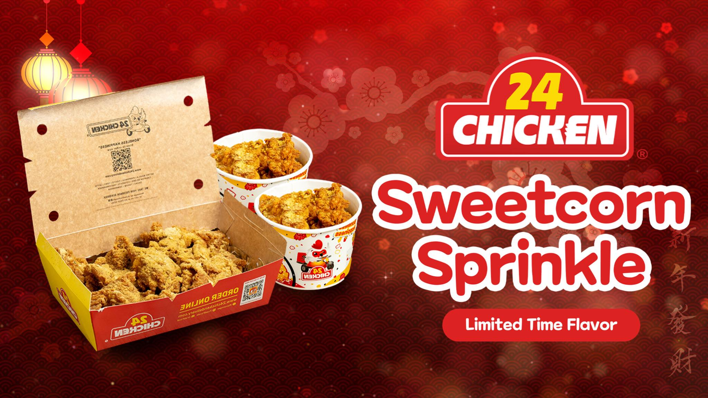

My work
A tourism marketing project where I created motion graphics to promote Davao. I focused on clean, engaging visuals that highlighted the city’s identity and appeal. It helped me understand how motion can shape perception and strengthen a destination’s story.
A school event where I handled motion graphics, operated live visuals, managed sound as the DJ, and did voice-over work. I controlled audio and visuals in real time to support the program flow and keep the energy consistent. The experience strengthened my ability to multitask in live production and deliver a smooth, engaging event.
A rebranding project focused on refreshing the visual identity of MGEN under Meralco. The goal was to create a more modern, unified, and professional look that reflects innovation and energy. I developed updated brand visuals and motion assets that strengthened consistency across platforms and improved overall brand presence.

A marketing project where I created collaterals for the launch of a new seasonal flavor. The challenge was making visuals that stood out while staying true to the brand’s identity. I delivered clean, eye-catching materials that supported the campaign and helped promote the product effectively.
A news program project where I served as director and main writer, leading the team in shaping the program flow and content. I also helped develop the visual package, including the opening billboard (OBB) and lower thirds, to create a cohesive on-screen identity. The project competed in DSPC and earned multiple accolades, strengthening my skills in storytelling, direction, and production leadership.